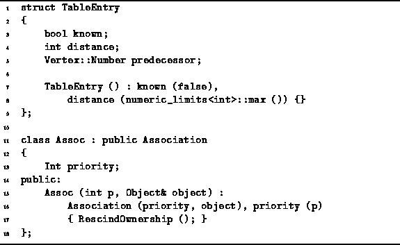

Data Structures and Algorithms
with Object-Oriented Design Patterns in C++
Data Structures and Algorithms
with Object-Oriented Design Patterns in C++
The implementation of Dijkstra's algorithm described below
uses the TableEntry structure declared in Program  .
Each TableEntry instance has three fields,
known, distance and predecessor,
which correspond to the variables
.
Each TableEntry instance has three fields,
known, distance and predecessor,
which correspond to the variables
 ,
,  and
and  , respectively.
, respectively.

Program: Data Structures for Dijkstra's Algorithm
In each pass of its operation, Dijkstra's algorithm selects from the set of vertices for which the shortest-path is not yet known the one with the smallest tentative distance. Therefore, we use a priority queue to represent this set of vertices.
The priority assigned to a vertex is its tentative distance.
The class Assoc defined in Program
is used to associate of a priority with a given object instance.
The Assoc class is derived from
the Association class given in Section .
Notice that the Assoc constructor calls RescindOwnership
to prevent the destructor from deleting the associated object instance.
 Copyright © 1997 by Bruno R. Preiss, P.Eng. All rights reserved.
Copyright © 1997 by Bruno R. Preiss, P.Eng. All rights reserved.